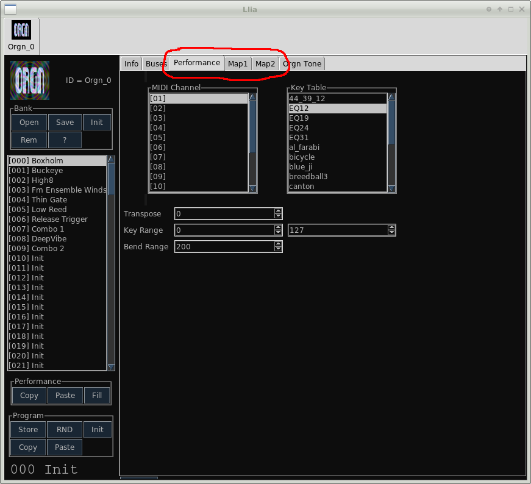

A Performance is a collection of values related to how a synth responds to specific MIDI events. In addition to synth parameter values each Program also contains a Performance. Performances are stored in the Program bank along with Programs and are recalled the same as with Programs (either by MIDI program change or by direct user selection). The types of things a performance specifies are:
Performance controls are spread across several tabs in an instrument editor.

Under the Performance tab there are 5 fields, two of these (MIDI channel
and Key Table) are not actually part of the Performance. They are placed
here for lack of a better location.
MIDI channel selects the MIDI input channel.
Key Table selects which key table to use. key
tables define the relationship between MIDI key number and frequency and
are used for alternate tunning. Currently only a few pre defined tables
are available. The table "EQ12" is the standard Western 12 note,
equal tempered scale with A = 440Hz.
Transpose sets note transposition in MIDI key numbers. Transpose may be up to ±36 semi-tones (3 octaves).
Key Range sets the active key range in terms of lower and upper MIDI key numbers. Notes outside of this range are ignored. The Key Range property is how instrument key splits might be defined.
Bend Range sets pitch bend amount in terms of cents The maximum range is 2400 cents (2 octaves).
Several MIDI values may be mapped to synth parameters. Typical examples are mapping modulation wheel to vibrato or key velocity to filter cutoff. With exception of MIDI continuous controllers, which are slightly more complex, all the mapping functions share a common interface. The Map1 tab is for MIDI controllers and Pitch Wheel. The Map2 tab contains Velocity, Aftertouch and Keynumber maps. All maps have the following values:
Source signal really only applies to MIDI controllers. The source is implicit (Velocity, Keynumber etc) for the other control sources. For MIDI controllers either the controller number is specified, or a symbolic name may be used, if they have been defined in the config file.
Destination parameter is the synth parameter the source is mapped to. Available parameters are provided in a drop down list. The parameter names can at times be rather cryptic. These names are usually not exact matches for the labels on the synth editors. You can however always tell what the parameter (and current value) associated with an editor control is by moving the mouse over it. The parameter and value will appear in the status line at the bottom of the editor window.
Curve selects the function used to map the source to the parameter value. Possible curves are:
Curve Modifier is a coefficient which modifies the curve in some way. The exact effect is dependent on the curve type. For linear curves the modifier has no effect. For exponential curves and the logistic curves the modifier alter the curve steepness. For the exponential curve the modifier sign changes the curve concavity. A positive value produce a concave curve while negative values are convex. or maybe its the other way around?. For the step curve the modifier sets the number of steps. Negative step counts alters the distribution to include the end points.
Range sets the parameter range. Many, but by no means all, parameters are "normalized" to take values between 0 and 1. If the high and low values are inverted, such that low > high, the the mapped curve will also be inverted.
Limits sets an absolute limit on the parameter value. If the range is greater then the limit then some portion of curve will be clipped.
You add a new parameter map by clicking the [+]
button in the appropriate section. Similarly a parameter map is
removed by clicking [-]. When removing a mapping the special value
"ALL" is be used to remove all maps from the give source.
In the case of keynumber the mapping function is aware of the
current key range and takes that into account when calculating the parameter
value.
Pitchwheel maps are in addition to the normal pitch bend functions. To
defeat normal pitch bending set the bend range to 0. Pitchwheel
is the only source which may have a negative value.